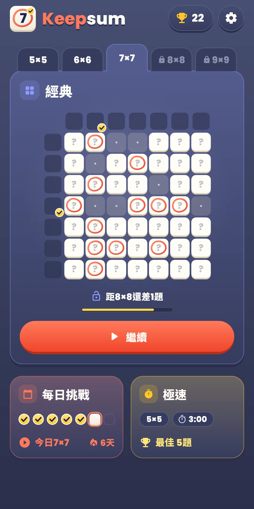
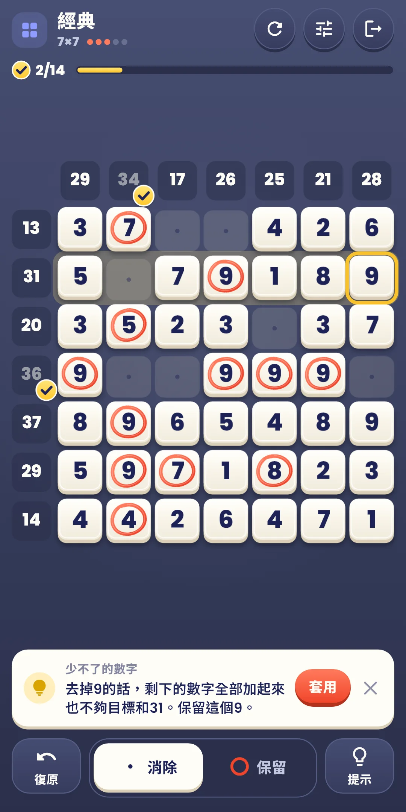
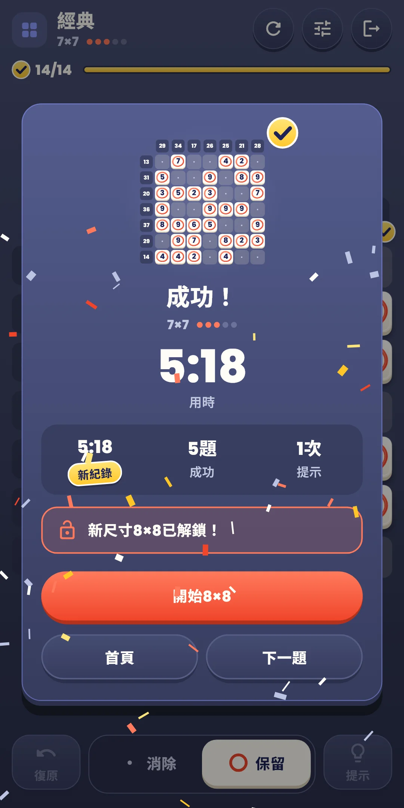
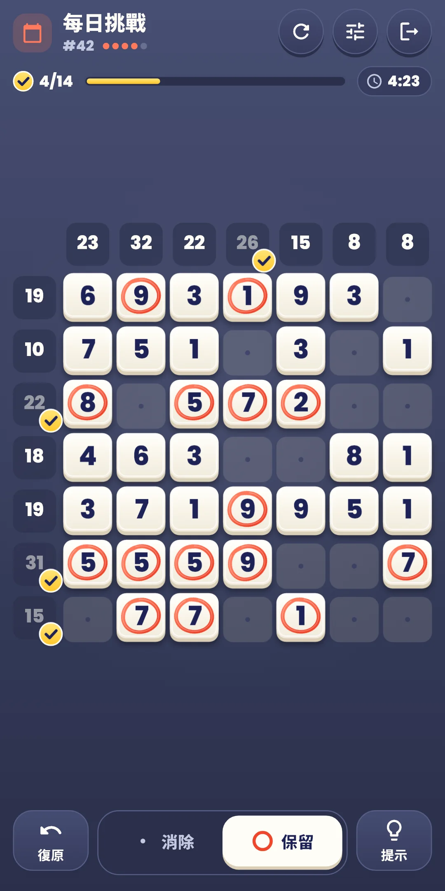
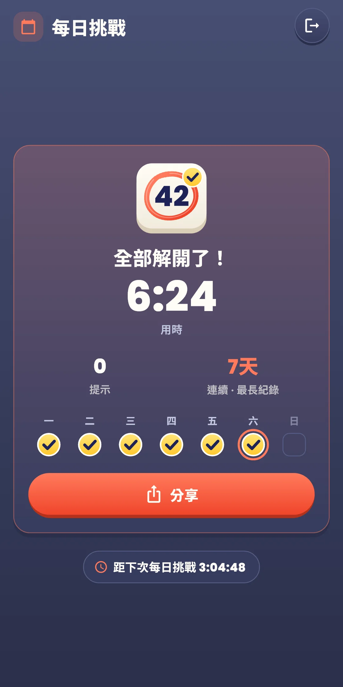
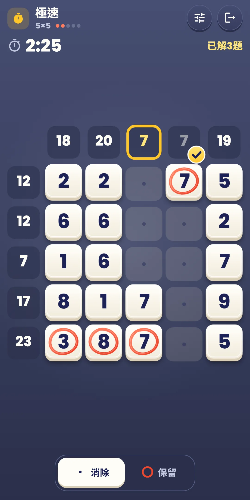
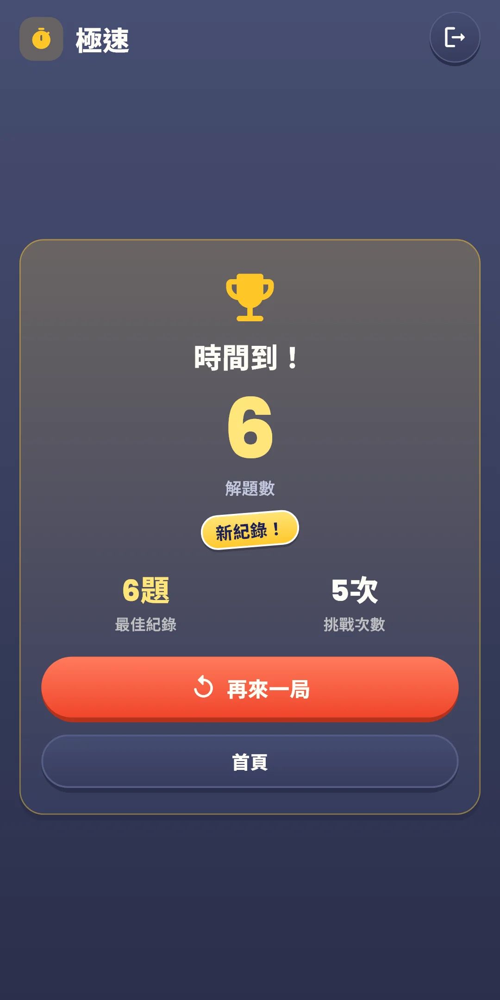
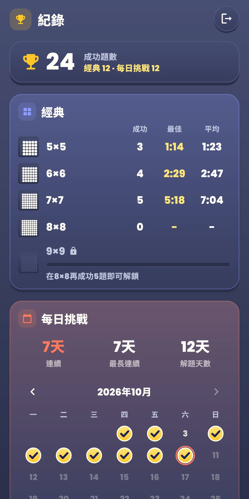

Keepsum
玩法說明
玩法說明








| 應用程式名稱 | Keepsum |
|---|---|
| 版本 | 1.0.0 |
| 開發 | Willee Project |
| 支援平台 | Android |
在填滿數字的盤面上，選出要保留的數字和要消除的數字，讓每一行和每一列保留的數字加起來都等於旁邊的目標和。這是一款邏輯益智遊戲。
下方的按鈕（經典、每日挑戰）：
| 按鈕 | 作用 |
|---|---|
| 復原 | 一步步復原最後做的操作。不限次數 |
| 消除·保留 | 選擇點按格子時用的工具 |
| 提示 | 告訴你下一個能定的格子和理由。不限次數 |
上方一行右側的重新開始（↻）按鈕：
| 選項 | 內容 |
|---|---|
| 這一題從頭開始 | 把定好的格子全部恢復原狀。經典模式的用時和提示也從頭算，每日挑戰則繼續累計當天的用時和提示。還沒有定好的格子時，這一項會變淡、不能點按 |
| 換一題（僅經典） | 放棄這一題，換一道同尺寸的題。放棄的題不算成功 |
旁邊的快速設定按鈕會打開一個面板，不離開遊戲畫面就能改音效、震動、特效和盤面設定。點按面板上方或往下拉就能關閉。最右邊是退出。
Keepsum 每日挑戰 #12 ✅ 6:41 提示 1 🔥 連續5天
#12是每日挑戰的編號，旁邊是用時。第二行是用過的提示次數，第三行是連續紀錄（兩天以上才顯示）。編號從上架那天的#1開始每天加一，編號相同就是同一道題。結果畫面還會顯示距下次每日挑戰的時間。
點按主畫面右上角的獎盃按鈕打開。按鈕上會顯示成功的題數。
點按主畫面右上角的齒輪打開。遊戲中可以用上方一行的快速設定按鈕，馬上改音效、震動、特效和盤面設定。
| 項目 | 內容 |
|---|---|
| 音效 | 開關保留、消除、一行（列）對上、解開題目時的聲音。定一格後接連對上好幾行（列）時，聲音會一個音一個音地升高 |
| 震動 | 保留、消除時輕輕震動，一行（列）對上時稍強一些。可以開關 |
| 減少特效 | 一次減少所有特效。開啟期間，下方的各項特效開關會以關閉的樣子變淡。也會依照裝置的「移除動畫」設定 |
| 特效開關 | 逐項開關特效：動畫（畫圈、消除、蓋章、波浪）、光效（行的閃光、提示閃爍、一行（列）對上或解開題目時的光）、彩紙（解開題目時）。沒有整個盤面晃動的特效 |
| 大號數字 | 把盤面上的數字畫大一些 |
| 行列輔助線 | 讓按住的格子所在的行和列以及兩個目標和亮起來。預設開啟 |
| 立即顯示錯誤 | 為和答案不同的格子加上斜線邊框。預設關閉，極速模式中不使用 |
| 顯示目前的和 | 在目標和旁邊用小字顯示保留數字的和。預設關閉 |
| 自動消除其餘數字 | 用保留的數字湊夠目標和後，自動消除這一行（列）剩下的格子。預設關閉 |
| 玩法 | 再看一次首次引導 |
| 隱私權選項 | 再次打開廣告同意視窗。只在需要同意的地區（例如歐洲）顯示 |
| 關於 | 版本、語言、本說明、隱私權政策、開放原始碼授權 |